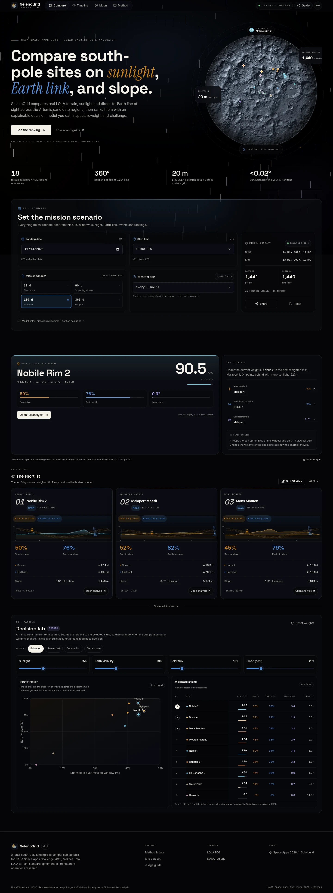
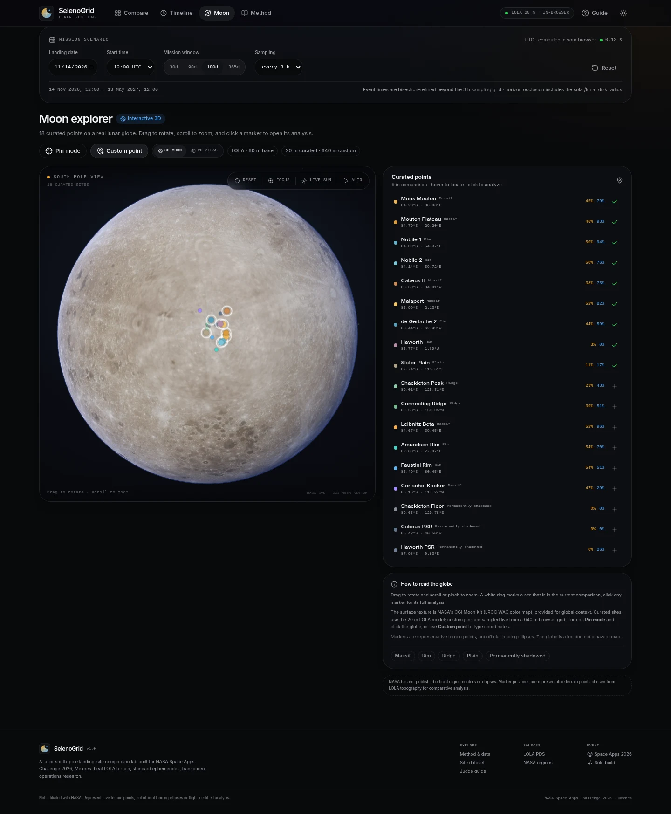
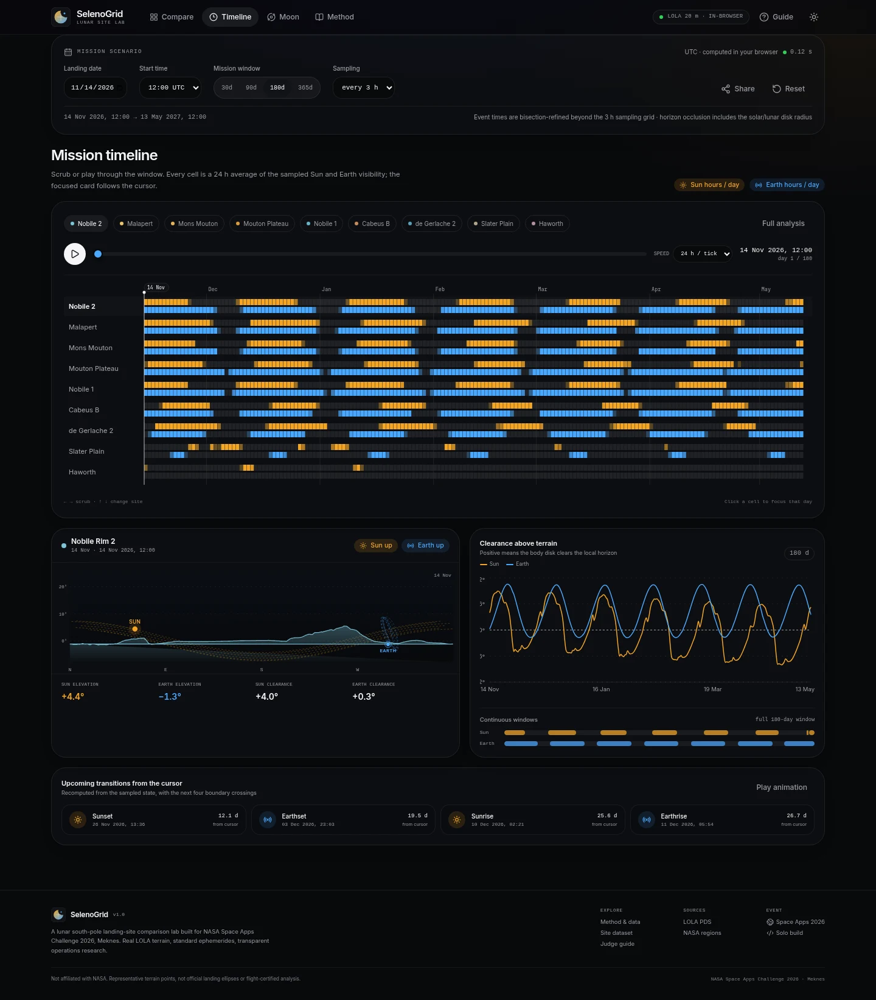
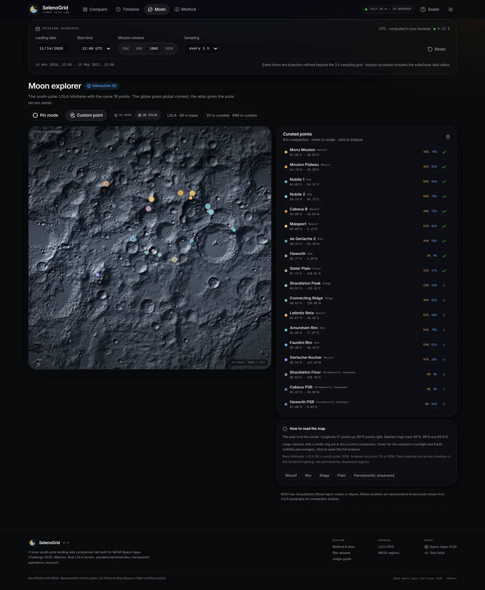

NASA Space Apps Meknes 2026 Challenge 4: best Moon landing site Solo entry
A navigator that compares lunar south-pole landing sites and dates on real sunlight, real Earth visibility, and real terrain. Static site, no backend, everything computed in the browser.
01 The problem
02 Your solution

03 NASA data you used

04 Demo

05 Impact and next steps

SelenoGrid Try it live
hatim-a.github.io/selenogrid
Code and methods public on GitHub. Not a landing certification. A better first question.